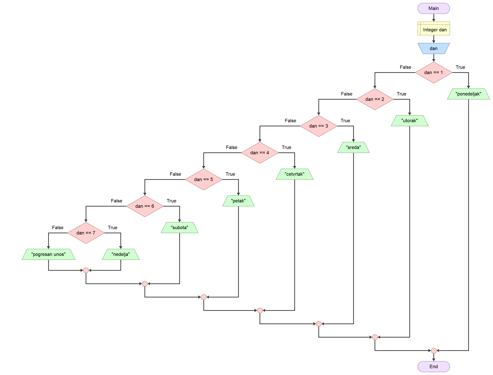

Наредба вишеструког гранања¶
Наредба вишеструког гранања switch-case може да помогне у контроли
вишеструког гранања, тако да програм изгледа прегледно и сажето. Општи облик
наредбе вишеструког гранања switch-case је…
switch(izraz)
{
case konstanta_1 : naredba_1;
case konstanta_2 : naredba_2;
...
case konstanta_n : naredba_n;
default: naredba;
}
…где izraz мора бити целобројног типа, а konstanta_1, konstanta_2 …
konstanta_n у case гранама истог типа као izraz. naredbа_1, naredbа_2
… naredba_n могу бити или појединачне наредбе или блокови наредби. Не могу
постојати две case гране са истом константом. Прво се израчунава вредност
izraz и проналази се грана чија је вредност константе једнака тој вредности.
Уколико се пронађе таква грана извршава се блок наредби почевши од те гране па
до краја switch наредбе. Ако се вредност израза не поклапа ни са једном
константом, онда се извршава блок наредби у default грани уколико постоји.
Најчешће је потребно да се изврши само једна грана и тада се користи наредба
break. Ако се наредба break наведе на крају блока наредби у грани, прескаче
се извршавање свих осталих грана до краја switch наредбе.
На пример, задатак је да напишеш алгоритам и програм у програмском језику C
који на стандардни излаз исписује назив дана у недељи на основу редног броја
дана, од 1 до 7, унетог са стандардног улаза. Ако се унесе број ван задатог
опсега, програм треба да испише поруку о грешци на стандардни излаз.
Алгоритамско решење овог задатка представљено дијаграмом тока може да изгледа овако:
{kind=link}
Програм у програмском језику C, решен са if-else наредбама, може да изгледа овако:
#define _CRT_SECURE_NO_WARNINGS
#include <stdio.h>
int main(void)
{
int dan;
scanf("%d", &dan);
if (dan == 1)
printf("ponedeljak");
else
if (dan == 2)
printf("utorak");
else
if (dan == 3)
printf("sreda");
else
if (dan == 4)
printf("cetvrtak");
else
if (dan == 5)
printf("petak");
else
if (dan == 6)
printf("subota");
else
if (dan == 7)
printf("nedelja");
else
printf("pogresan unos");
return 0;
}
Аналогно претходном решењу, решење са наредбом вишеструког гранања…
#define _CRT_SECURE_NO_WARNINGS
#include <stdio.h>
int main(void)
{
int dan;
scanf("%d", &dan);
switch (dan)
{
case 1: printf("ponedeljak"); break;
case 2: printf("utorak"); break;
case 3: printf("sreda"); break;
case 4: printf("cetvrtak"); break;
case 5: printf("petak"); break;
case 6: printf("subota"); break;
case 7: printf("nedelja"); break;
default: printf("pogresan unos");
}
return 0;
}
…свакако изгледа много прегледније и сажетије.
Ако је потребно да за више различитих константи наведеш исту наредбу или блок
наредби, онда case гране можеш груписати.
На пример, задатак је да напишеш програм у програмском језику C који на
стандардни излаз исписује да ли је дан радни или нерадни на основу редног броја
дана, од 1 до 7, унетог са стандардног улаза. Ако се унесе број ван задатог
опсега, програм треба да испише поруку о грешци на стандардни излаз.
#define _CRT_SECURE_NO_WARNINGS
#include <stdio.h>
int main(void)
{
int dan;
scanf("%d", &dan);
switch (dan)
{
case 1: case 2: case 3: case 4: case 5: printf("radni"); break;
case 6: case 7: printf("neradni"); break;
default: printf("pogresan unos");
}
return 0;
}
Пошто се за памћење карактера у програмском језику C користе подаци типа
char, односно мали целобројни подаци, онда и izraz у наредби вишеструког
гранања може бити карактер.
На пример, задатак је да напишеш програм у програмском језику C који на
стандардни излаз исписује резултат аритметичког израза унетог са стандардног
улаза. Аритметички израз треба да буде формиран помоћу два операнда реалног
типа двоструке прецизности између којих се налази знак операције +, -, *
или / (нпр. 1+2 или 3/4 и сл.). У случају погрешног уноса програм треба
да испише поруку о грешци на стандардни излаз.
#define _CRT_SECURE_NO_WARNINGS
#include <stdio.h>
int main(void)
{
char op;
double a, b;
scanf("%lf%c%lf", &a, &op, &b);
switch (op)
{
case '+': printf("%g", a + b); break;
case '-': printf("%g", a - b); break;
case '*': printf("%g", a * b); break;
case '/': printf("%g", a / b); break;
default: printf("pogresan unos");
}
return 0;
}